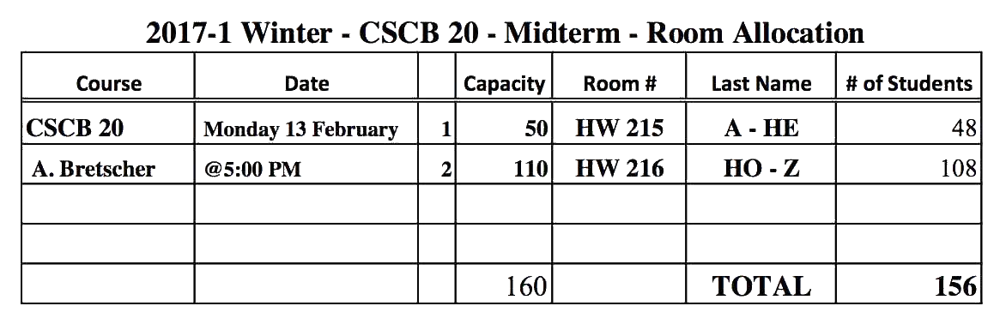

There will be one midterm. The midterm will be 75min in length. You should go to either HW215 or HW216 depending on your last name as shown here.
Preparing for the midterm:
Once you have done some preparation, you can practice on a previous midterm: Term Test